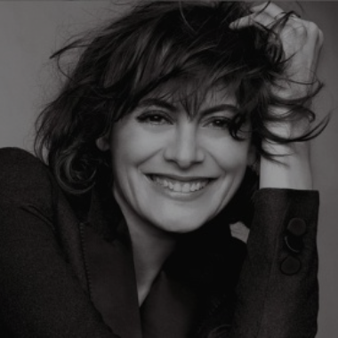
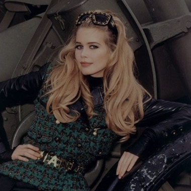
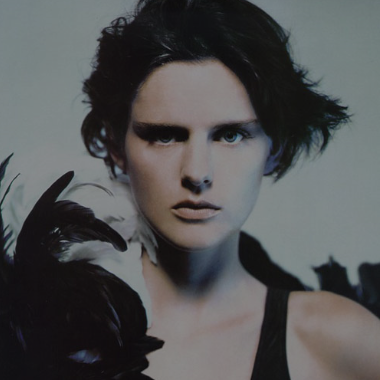
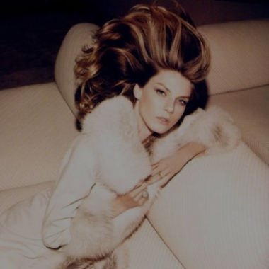
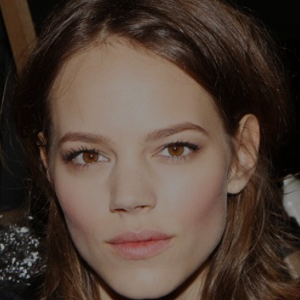
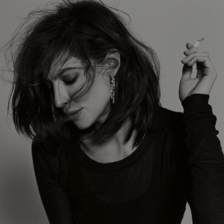
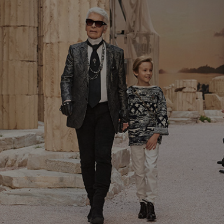
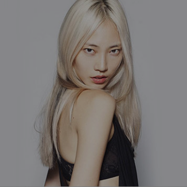
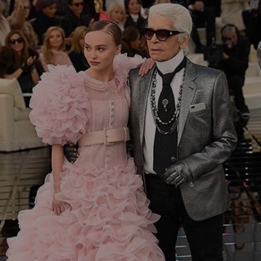

INTRODUCE
LOOKBOOK
BELOVED MUSE
12 WISE SAYINGS from KARL
Inez de la Fressange

이네드 라 프레상주는 샤넬의 창립자인
가브리엘 샤넬의 혼을 가장 개성있게
표현한 뮤즈
Claudia Schiffer

클라우디아 쉬퍼는 모델로 데뷔한 지
1년도 채 되지 않은 시기에 칼의
눈에 띄어 오래 활동한 샤넬의 뮤즈
Stellar Tennant

스텔라 테넌트는 이전까지 글래머스하고
여성스러운 '샤넬걸'과 다르게 최초의
보이쉬한 샤넬의 뮤즈
Angela Lindvall

안젤라 린드발은 칼 라거펠트의가 가장
사랑하던 모델, 세 아이의 엄마가 된 후에도
칼 라거펠트의 부탁으로 쇼에 선 샤넬의
특별한 뮤즈
Freza Beja Ericsson

프레자는 2000년대 중반부터 2014년까지
칼 라거펠트가 하는 모든 작업에 함께한 뮤즈
Anna Muglaris

안나 무글라리스는 오랜 시간 샤넬의
뮤즈로서 다양한 광고에 등장
Hudson Chronicle

허드슨은 3살 때부터 칼 라거펠트의
사랑을 받으며 샤넬의 최연소 뮤즈이자
샤넬의 왕자님
Soo Joo

수주는 칼에게 '다른 모델은 필요없어.
너만 찍을거야.' 라는 말을 들을 정도로
샤넬의 대표적 뮤즈 중 한 명
Vanessa Paradis

바네사 파라디는 샤넬의 모델 중 샤넬과
가장 잘 어울리는 모델이다. 칼 라거펠트의
사랑을 받으면서 칼이 직접 드레스를 제작